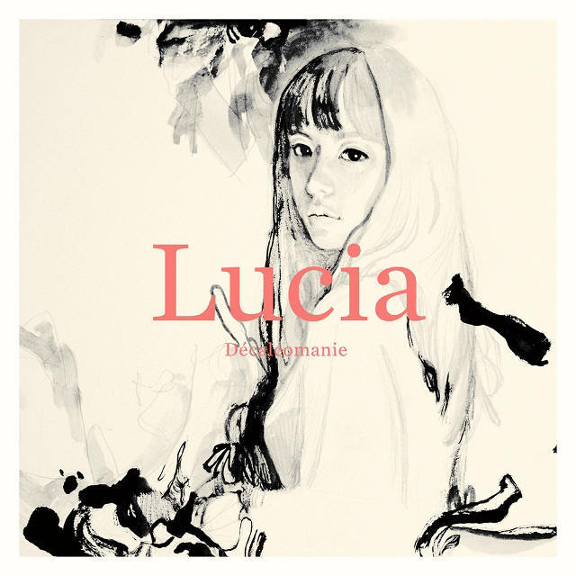

안녕하세요 라보엠입니다.
저는 파리에 대한 로망은 없지만, 지난 파리 올림픽의 멋진 풍경과 고풍스러운 건물을 경기장으로 사용하며 좋은 인상을 갖게 되었습니다. 언제 봐도 에펠탑은 파리에 대한 갈망을 이끌어내는 멋진 랜드마크가 아닐까 싶습니다.
개인적으로 이 가수를 보거나 노래를 들으면 파리가 생각나는 가수가 있는데 바로 Lucia(심규선)입니다. 아마도 그녀의 2집 티져에서 나왔던 에펠탑의 이미지가 10년지 지난 지금도 남아 있어서인것 같습니다. 에피톤 프로젝트의 앨범에서 심규선은 선인장, 오늘 등을 부르며 함께 작업하다가 2011년 1집 자기만의 방, 그리고 이듬해 정규앨범에 필적하는 볼륨을 가진 EP Decalcomanie [데칼코마니](2012)를 발표합니다. 오늘 소개해드릴 노래는 이 앨범에서 심규선이 작사, 작곡하고 노래를 부른 소중한 사람입니다.

Lucia(심규선) 소중한 사람 노래 듣기
1절 " 평범한 순간들 바람이 나무를 춤추게 하듯" 가사 뒤에 나오는 무심한듯 우아하게 채우는 피아노 부분을 가장 좋아합니다.
영화 마린 x 소중한 사람 MV
그녀에게 프랑스의 우아한 이미지가 있어서인지 프랑스 영화 마린과 콜라보하여 영화의 컷으로 MV 를 제작했습니다.
소중한 사람 가사
1.
평범한 순간들
바람이 나무를 춤추게 하듯
멈춰 있던 내 시간을
그대가 흔들어 깨어나게 해
그 손길로
소중한 사람 네가 아니면
나는 행복이 뭔지도 모를걸요
아픈 기억을 모두 다 잊을 수 있게
내 곁에서 살아주세요
2.
갈 곳 없이 헤매던
노래는 이제 머물 곳을 찾고
비어있던 내 마음은
그대로 가득 차 흘러 넘치네
이 노래는 너야
소중한 사람 네가 아니면
나는 행복이 뭔지도 모를걸요
아픈 기억을 모두 다 잊을 수 있게
내 곁에서 살아
나를 떠나지 말아
내 곁에서 살아주세요
Lucia(심규선) 2집 티저
2집 앨범 티저에 등장하는 파리의 이미지